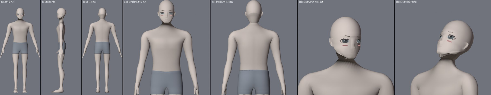
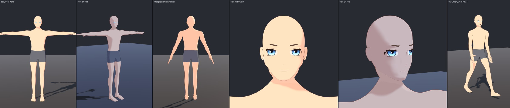
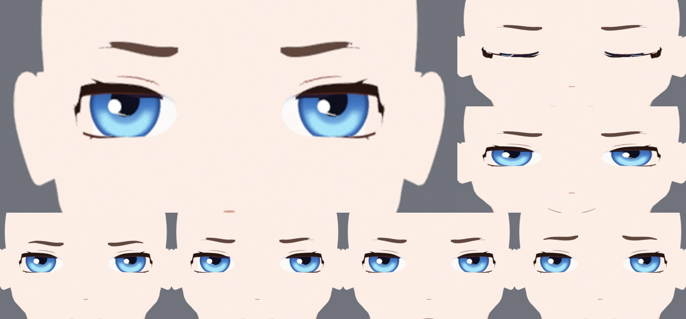
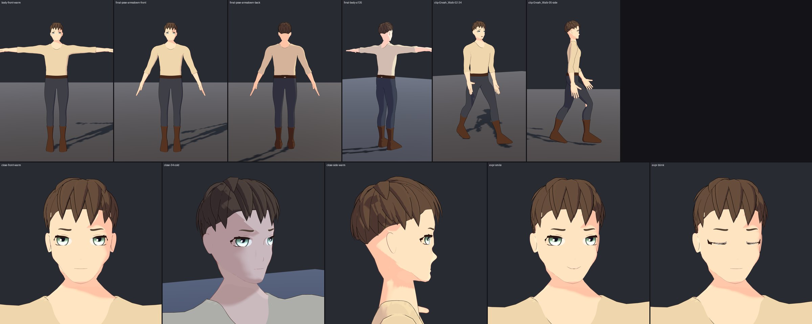
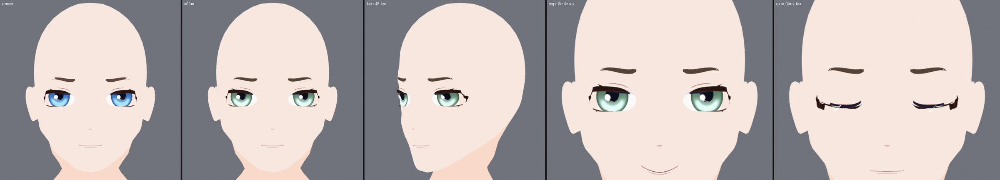
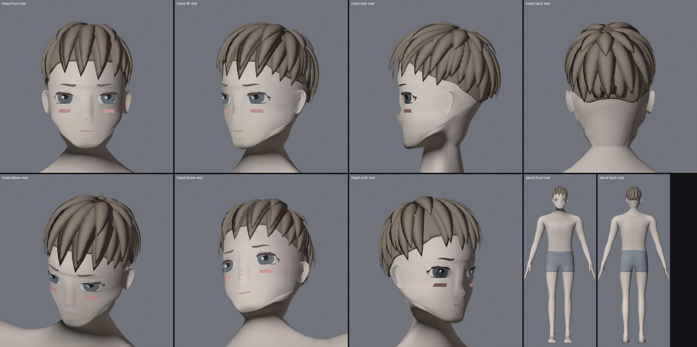
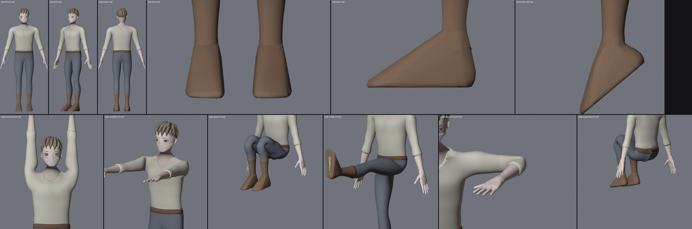
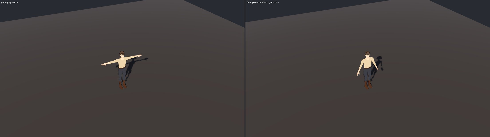

Eve — the base template
Face shape and artwork (r001, r002)
Eyes moved 3.1 mm toward the midline, the lower face narrowed toward the chin, the cheekbone brought forward so the far eye sits inside the outline at three-quarter, and the head normals rebuilt to remove a box-shaped edge round the face.

Eye shape and eyeliner (r003 to r013)
A new lid outline with a heavier upper lash band, a lower line and a crease. Four critic runs scored 6 to 6.5 against a target of 8; the user then reviewed r012 as good, and r013 fixed the hairline, the cheek marks and the brow controls.


Head, start to now, and the first Unity captures (r021)
Expression strength, face shading and line, the neck and ears, and body normals were merged as r021, the first revision seen under the game shader.


Feet with five modelled toes
The rounded toe mass was cut off each foot and replaced by five separate toes, so a barefoot adventurer is possible. Nails and creases were then painted on the body texture.


Undergarments, outfit, motions and a derivative (r032, r033, d002)
A sports-style top and boy shorts replace the old modesty meshes. Over them, a sleeveless shift. Eve also got a valid Humanoid avatar, placed UVs, an idle and a walk clip, and a taller derivative (1.656 m) that passes the same checks.


- Still short: the leg hems are slightly uneven (edges graded 7 after three passes), the outfit does not rebuild byte for byte, and no player build or play mode was run.
Enosh — the male template
Built in fourteen scripted steps (EN0 to EN13) from a copy of Eve: one remap table for proportions, then chest, limbs, neck, hands, feet and face. Height 1.740 m against Eve's 1.593 m, 7.46 heads, shoulder span 478 mm against 410 mm. Same triangle count and the same 87 bones.







The male adventurer
The first character made on Enosh, a road-worn traveller: short layered ash-brown hair, grey-green eyes, cream shirt, slate trousers, brown belt and boots. He passed his Unity Humanoid import and has a prefab with nine switchable parts.










- Scores are the author's own; only three of the fourteen steps reached 8 out of 10.
- Still short: the neck is short and creases at its base, the chest is nearly flat with no collarbone, hands and feet are Eve's shapes scaled up, the fringe is an even row of spikes, and the boots are plain wedges with no sole or heel.